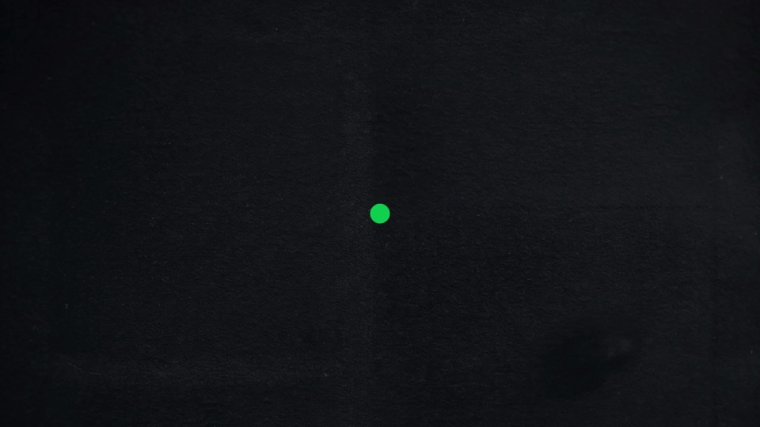
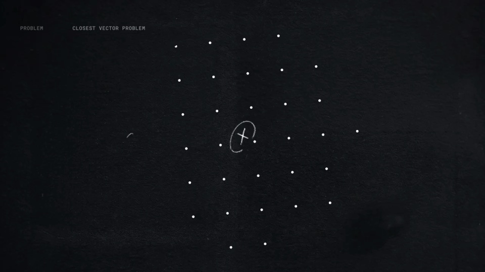
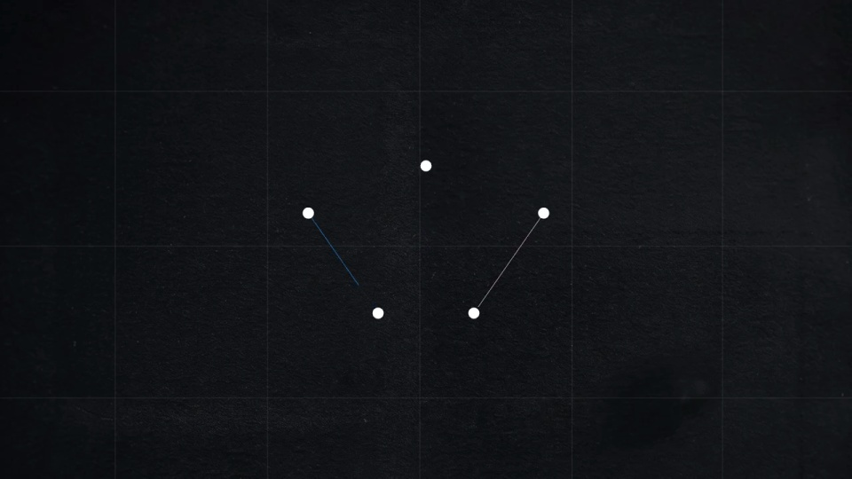
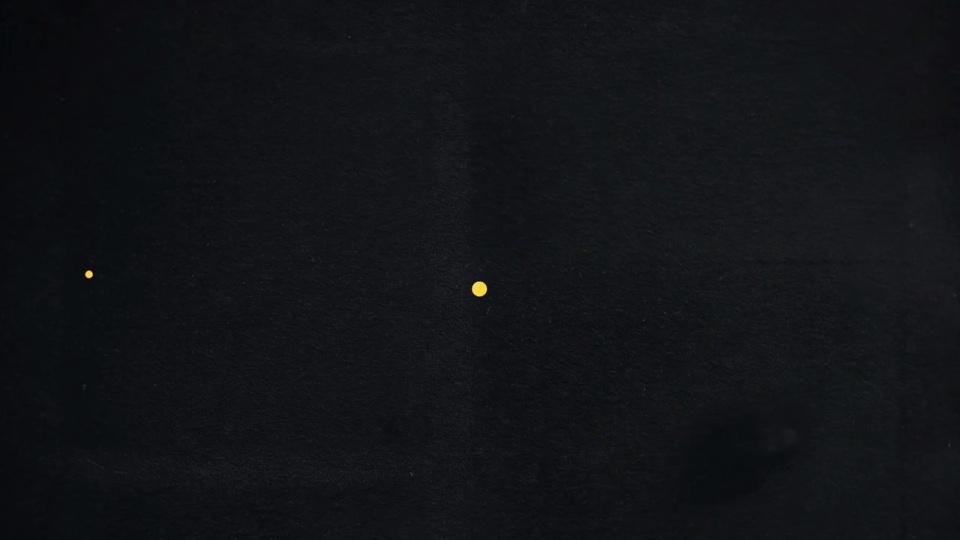

OpenAI / V011
研究突破｜数学与理论计算机科学成果
用点和线建立一组研究图示。每个主题逐步成形，再把视觉复杂度降下来，为下一个主题腾出空间。
构图与编排 可播放 · 可替换内容
整体编排规则示例
查看 HTML 源码
<!doctype html><html lang="zh-CN"><meta charset="utf-8"><meta name="viewport" content="width=device-width,initial-scale=1"><title>研究突破｜数学与理论计算机科学成果 · sequence</title><style>html,body{margin:0;width:100%;height:100%;overflow:hidden;background:#111419}canvas{display:block;width:100%;height:100%;object-fit:contain}</style><body data-mode="sequence"><canvas width="1000" height="600"></canvas><script src="data.js"></script><script src="common.js"></script><script src="scene.js"></script><script src="bridge.js"></script></body></html>画面元素网格圆点集合粉笔线手写注释编号栏
MOTION LANGUAGE
动作与构图
局部动作 · 构图规则
01
把索引放到边角
黑板色背景配粉笔白细线，中心留给主要图形。学科、编号和短标题固定在边角，用等宽字保持整齐；强调色只用于当前节点或重点关系。
02
按图形的构成顺序绘制
按图形的构成顺序绘制规则示例
查看 HTML 源码
<!doctype html><html lang="zh-CN"><meta charset="utf-8"><meta name="viewport" content="width=device-width,initial-scale=1"><title>研究突破｜数学与理论计算机科学成果 · sequence</title><style>html,body{margin:0;width:100%;height:100%;overflow:hidden;background:#111419}canvas{display:block;width:100%;height:100%;object-fit:contain}</style><body data-mode="clip" data-start="9" data-end="23"><canvas width="1000" height="600"></canvas><script src="data.js"></script><script src="common.js"></script><script src="scene.js"></script><script src="bridge.js"></script></body></html>圆点先出现，再连接边，最后增加填充或密度。三角形、格点、密堆积和网络各自采用能解释结构的生长方式。
上一图撤去时保留少量点，让这些点成为下一图的起点。
03
几何主题之间如何切换
先给一个可辨认整体，再用近一步的细节展开。章节结束时减少元素数量，最终切白底标题，拉开与前面黑板内容的密度差。
04
换成新的知识主题
先选能表达该主题的图示，再替换名称。沿用点、线和边角索引，不让相邻图示的构建过程完全相同。
SEQUENCE
段落与节奏
点击段落，定位到上方编排示意。




画面参考 · 离散静帧
KEEP THE RELATIONSHIPS
制作其他主题
- 替换知识领域时定义对应图示和图例，不能只改名称。
- 保留少量点作为不同图间的共同视觉原语。
制作约束
网格 / 圆点集合 / 粉笔线 / 手写注释 / 编号栏
- 每一研究主题用一种几何图建立，再归约为少量点以接入下个图。
- 标题、编号和学科在边角维持稳定索引，主体变化在中心。
- 点、边和填充依次构建，避免整个数学图一帧出现。